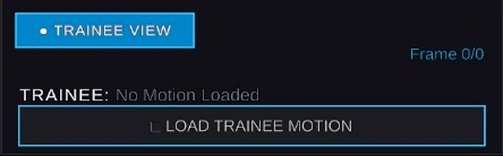
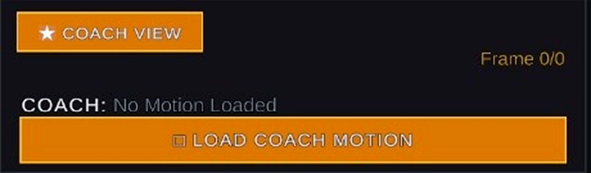
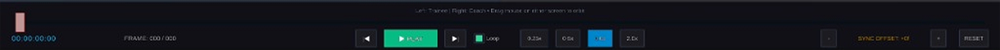

SPLIT-SCREEN
SNEAK PEEK • NEXT-GENERATION REVIEW
Side by side. Beyond compare.
A sneak peek at our upcoming flagship feature: a 50/50 split-screen environment that matches live trainee motion against coach benchmarks with synchronized 3D camera orbiting and temporal offset calibration.

Dual 50/50 Viewport Architecture.
Eliminate guesswork when analyzing posture discrepancies with independent, color-coded role feeds:
- Trainee View (Cyan): Dedicated real-time viewport with direct file loader (
+ LOAD TRAINEE MOTION). - Coach View (Amber): Master benchmark channel with baseline file loader (
+ LOAD COACH MOTION). - Zero Compromise: Both viewports execute in parallel at full 60 FPS resolution without dropped frames.


Synced Orbit & Offset Alignment.
Inspect critical athletic moments with mathematical precision:
- Sync Cameras Mode: Orbit, pan, or zoom around either athlete—the other viewport mirrors your camera angle seamlessly.
- Temporal Offset Tuning: Adjust start-time discrepancies frame-by-frame (e.g.
SYNC OFFSET: +0f) so impact or apex frames coincide. - Synchronized Transport: Control playback, reverse, and variable speeds (0.25x, 0.5x, 1.0x, 2.0x) across both viewports in lockstep.

Feature Roadmap Specifications
Release Horizon
End November 2026
Display Configuration
Dual 50 / 50 Split View
Camera Coupling
Synchronized Dual 3D Orbit
Timing Calibration
Dynamic Frame Offset Engine
Transport Sync
Frame-Lock Multi-Speed